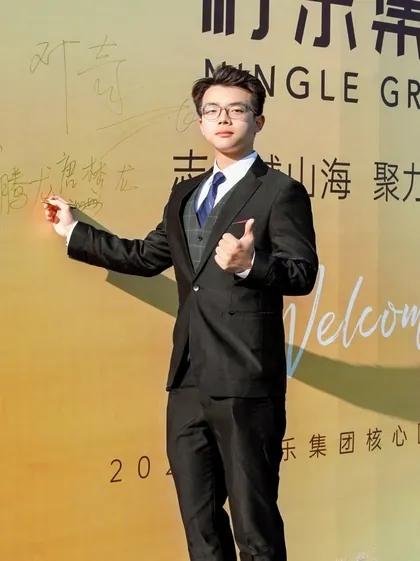
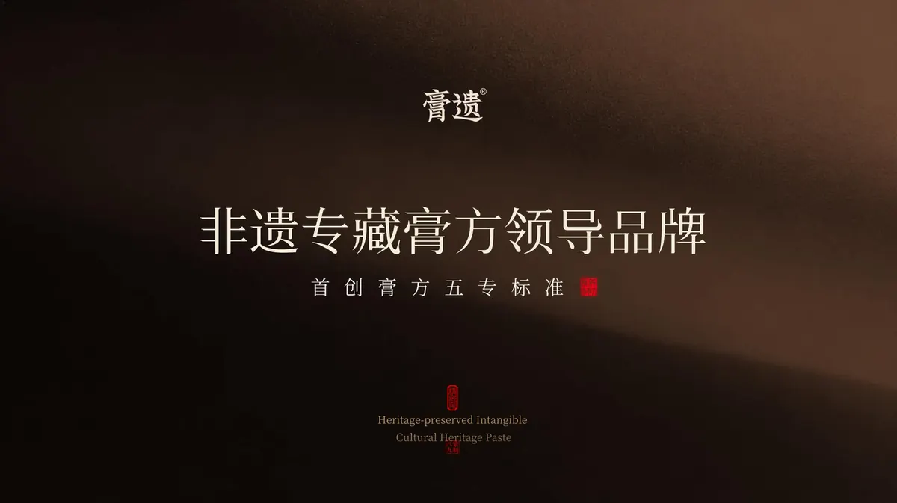
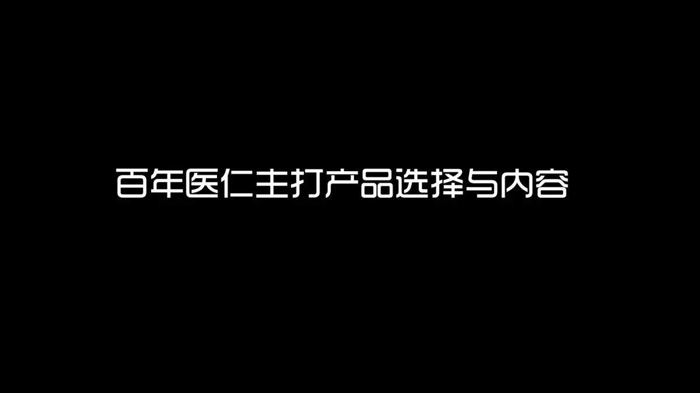

接手当月 1 周稳局
部门负责人评分 · 高层核实
人力口径 · 对比上季度

湖南工商大学 · 电商设计 · 大专。求职意向：设计主管，长沙。
主导 17 个品牌视觉升级。带过 20 人，分为天猫、京东、拼多多共 3 个设计团队，从 0 到 1 建过品牌视觉体系。跨部门协作能力极强，善于推动 AI 工作流落地和优化迭代 设计 SOP 流程。
负责设计团队日常管理，把控项目质量与交付进度，提高团队协作及设计能力。统筹视觉体系与人才梯队搭建，深刻理解品牌战略与商业目标。具备用户行为、数据流量转化分析能力，具备较强跨部门协作沟通能力，与运营团队紧密合作以销售结果为导向。直接管理三个设计团队共 17 人，叠加渲染、拍摄等外协共计 20 人+（团队由 5 人扩至 18 人）。
独立负责肌肉科技、ALLMUS 谷本日记等多平台店铺核心设计产出。协同品类运营深度挖掘产品核心卖点，参与前期页面策划并转化为高转化视觉方案。基于点击率、转化率、停留时长等核心数据反馈进行驱动优化。累计输出详情页 30+、主图 200+；推广图平均点击率 15.38%，最高 36.58%。
在校任桌游棋社社长，团队协作与组织能力强，社员规模由往年 15 人拉新至 50 人。具有扎实的美术功底和良好审美，能准确把控视觉节奏。
接手任何项目先问「这个设计要解决什么生意问题」，把目标翻译成可验收的指标，再开始动视觉。
先跑通一次完整链路，确认走得通，再考虑上工具和自动化。顺序反了就是白投入。
多个方向并行跑，用真实点击率和转化率做决策，避免主设计师一个人的审美风险。
规范、素材库、SOP、手册——人走了资产还在，团队能力不依赖某一个人。

接手时膏遗是全新品牌，零视觉资产——没有 logo 规范、没有色彩体系、没有摄影方向，手上三个系列，公司要求三个月内支撑八个系列扩张。竞品环境更棘手：方回春堂、喜纯等同期品牌全部集中在「古风 + 暖调」，用色、构图、字体高度同质化。「古风」已是及格线，不是差异化，跟随即成为第三个长得一样的人。
第一步不是画图，是给品牌找一句能被记住的话——「非遗专藏膏方领导品牌」，必须够短、够专、够可证。再提炼「首创膏方五专标准」作信任状：古方新研、足年道地、古法工艺、柴火熬制、顶级品质。定位回答「我是谁」，五专才回答「凭什么信你」。视觉建立五色系：褐色家族统一全线，每个系列分配识别色。
上线后膏遗详情页平均停留时长 +22%，转化率 +18%。更关键的是结构性收益：八个系列复用同一套视觉语言，新系列上线不必重做调研、重新定调、重新验证，只替换产品图与卖点即可投产。单系列立项到上线周期缩短约一半，设计师的时间从重复搭框架转回策略判断。
零视觉资产的新品牌，如何在 3 个月内长出一套支撑 8 个系列扩张的视觉语言。
品牌的原点是一个矛盾：膏方是「非遗专藏」，听起来很重，但货架上只给你 3 秒——没人读文案、看工艺，只扫一眼图。
所以第一件事不是画图，是 给品牌找一句能被记住的话——「非遗专藏膏方领导品牌」：够短能印在任何位置、够专别人不敢说、够可证能拆出证据链。
开工前先出两份文档。第一份 品牌基本情况：名称、定位、核心价值、竞品对标，让全员认知一致。
第二份 目标用户画像：人群特征、消费行为、审美偏好、价格敏感度、决策链路。膏遗用户是 35–50 岁、注重养生但怕被割的中高收入人群，不买「网红感」，买「可信感」。这两页直接决定用色与构图。
左边是升级前的详情页：信息平铺、无视觉重心。右边竞品全是 「古风 + 暖调」。
这说明 「古风」已是及格线，不是差异化。跟随即成为第三个长得一样的人。差异化只能从别处找：用高对比暗调 + 器物质感建立「贵」的第一印象，让它在货架上因「不像别人」而被看到。
「非遗」无法验证，竞品都在说等于没说。于是提出 「首创膏方五专标准」，拆成五个可核对动作：古方新研、足年道地、古法工艺、柴火熬制、顶级品质。
关键转化在这里：把不可验证的概念，翻译成可验证的动作——用户不必信「非遗」，只需信「柴火熬制」这类看得懂的事。视觉对应高对比暗调 + 宋代器物质感。
这套色彩叫 「褐色统一多色系」：同一褐色家族统一全部产品线，每个系列分配识别色。8 个系列像一家人，单品又能被单独记住。
四个基础色定死：润米 #efe4d3（宣纸底）、奢金 #C9A962（只做信任标记）、古棕 #8B7355（正文线条）、雅褐 #3D2F23（深色背景）。系列识别色另配朱红、深紫、墨绿。
字体策略是 「新中式简约字体」：不用黑体（太现代），不用书法体（太江湖），而用宋体家族在两者之间取平衡。
标题用三极锦宋简体，笔画刀刻感呼应「非遗膏方」的厚重；正文用思源宋体，更柔和、字重更多，两万像素长图用锦宋会阅读疲劳。锦宋负责「立」，思源负责「读」。

助眠赛道规模约 400 亿，其中「睡眠浅、易醒」的分众人群超过 4000 万，与「完全睡不着」的需求并不相同。但头部五个品牌全部以「古方」「千年传承」为诉求，没有一个针对分众人群做过差异化——消费者看到的是五个长得一样的选项，只能在价格上做选择。分众人群的位置仍空缺，但不能跟着比谁更「古」，那条赛道已经挤满。
传统做法是主设计师拍板定一个方向，一旦选错整套物料重做。我们反过来：并行五个视觉方向，每个方向配六条内容策略（信任前置、场景具象、痛点直击、数据佐证、权威背书、成分解析），各自产出完整素材组，投放真实流量跑两周，累计曝光超 4000 万。不看谁更好看，只看点击率、加购率、转化率。
两周后数据给出答案：「暖金 + 朱红」方向点击率与加购率显著领先，其余四个方向淘汰。收敛后的视觉语言成为后续所有产品的标准模板，新品视觉决策周期 从两周缩短至三天——方向已验证，只需在新品上执行。这套「并行测试、数据收敛」后来成为团队标准动作。
百年医仁有多条产品线：酸枣仁膏、阿胶糕、代餐粉、养生茶，销量与增长各不相同。不是每个都值得投入视觉升级，投错就是浪费。
所以第一步不是设计，是 选品。用真实市场数据做四组对比，找「增长最快 + 视觉最弱」的交叉点：前者说明有需求红利，后者说明有设计切入点。
拉出淘宝/天猫 4 个细分品类近 30 天销售数据，对比四个指标：销售额、客单价、评价数、品牌集中度。
结论明确：酸枣仁膏增速最快（+25%），但头部品牌视觉几乎一模一样，集中度高、差异化空白。其余三个品类要么增速平缓，要么头部已有强势视觉壁垒，投入产出不划算。
助眠市场超 400 亿，但重点不在这个数字，而在 「睡眠浅、易醒」的分众人群有 4000 万+——与「完全睡不着」的需求不同，要的东西也不一样。
头部 5 个品牌都在讲「古方」，全部打「助眠」泛需求，没有一个针对分众人群做差异化。切入点因此明确：不比谁更「古」，而是把分众人群讲清楚。
拉出类目 TOP5 详情页首屏横向对比，发现都在 同一套语汇里：暖黄底、药材堆叠、大字功效。
这套语汇已被用户认知为「该有的样子」，能降理解成本；而 跳出这套语汇立刻就有区分度，前提是产品力撑得住。所以我们没完全背离，保留「暖」的温度、换成「暗金」的质感。
针对分众人群，定了 5 个视觉方向（高品质感、原料表达、内容场景、人物代入、焦点表达）与 6 条内容策略（信任前置、场景具象、痛点直击、数据佐证、权威背书、成分解析）。
每一条都对应竞品的一个具体短板。五个方向不同时上线，而是 并行做小样投放测试，用点击率与加购率收敛方向——避免一人拍板的风险。
竞品都在讲「药食同源」，视觉就做成了「药」——白底、蓝字、成分表。我们反其道：暗紫 / 深红 / 金的高品质色调 + 强光影，把它做成「像补品」而不是「像药」。
核心判断：买这个产品的人要的是「修养」，不是「治病」。药感让人联想到病痛，补品感才能传递「我在善待自己」的情绪价值。
拍了两组人物，各自解决一个不同的问题：
医女坐诊——传统服饰女医师诊脉，建立专业信任，回答「凭什么信你」；女性消费饮用——日常场景喝一杯，建立生活代入，回答「我什么时候需要它」。
两组作用不能互换：专业感太强会觉得「这是药」，生活感太强会觉得「这不专业」。两组并存，才能同时说服理性与感性两类购买动机。
电商设计做的不是图，是转化。把膏遗·蒲公英佛手消散膏按 7 大板块拆开。
第一屏不呈现产品，而呈现品牌标识与五色阵列——用户进页面先判断 品牌可信度，不是产品；产品置于品牌气质下才有价值感，单独呈现等同商品图。第二屏放权威背书：央视展播与标准起草单位占屏三分之一，缩成角标等于没放。
首屏标题原用「千年古方」，点击率低；换成「中国膏方标准起草单位」后停留上升。「古」是形容词，「起草单位」是身份——用户只识别身份。
「三珍真实添加量 ≥40%」视觉权重大于产品图——用户对「非遗」已免疫，却对可横向比较的百分比敏感；1596 同理，具体年份远胜「历史悠久」。可验证的数字，是替代形容词的最优解。
「非遗」不可验证，于是拆成五项可核对动作：古方新研、足年道地、古法工艺、柴火熬制、顶级品质。用户未必记住每条，但会形成「这品牌有标准」的判断。抽象概念必须拆到可核对的颗粒度。
到第七屏，功效认知已完成但决策未发生。再堆成分是浪费，必须转情感：尾屏用生活场景，把「疏肝解郁」换成可自我代入的日常。理性解决「是否可信」，感性解决「是否需要」。
「非遗技艺」是资质，用户感知不到难度，于是转成四项可对比数据：20 倍精纯、100 斤原料 = 5 斤膏、72 道工序、3 日淬一膏。
安全性无法靠形容词建立。「5 大 0 添加 + 174 项检测」把承诺变成可计数条目——用户不会逐项核对，但「174」本身即构成信任依据。
末屏集中呈现非遗认证、品种权、标准起草单位与检测报告。密度最高，但用统一边框与暗底处理。它的任务不是让人逐项阅读，而是建立「资质完备」的印象。
四味原料各自成屏，因为每味信息不同：佛手 4 年生、单果 150g；黄芥子 2000 米海拔；当归 3 年生、岷县产区。合并会全部退化为「优质原料」。
每张原料特写叠三处角标数据，避开主体——不是遮盖药材，而是让视线先感知质感、再落到数据。顺序颠倒则数据失效。
四屏全部实拍特写。渲染图必然「过度完美」，中药材的可信度恰恰来自纹理、色泽与瑕疵——这是该品类摄影的底线。
开场先立气质不谈卖点，三秒认定高端品牌
央视展播与标准起草单位前置，用身份替代形容
首次完整露产品，添加量数字大于产品图
把「非遗」拆成五个可核对工艺动作
三味药材的产地年份与添加量，道地变成数字
时间轴把「古」量化，给确切年份而非含糊说辞
先点出竞品的认知盲区，再给三步解郁框架
20 倍精纯与 72 道工序，工艺难度变可对比数字
二次讲原料换角度，证明存放了足够年份
收尾落到量化承诺，用检测报告闭合信任链
一句话方法论：先立气质 → 给证据 → 定标准 → 证原料 → 显工艺 → 闭合信任 → 转情绪下单。
前 6 块解决「凭什么信你」，最后 1 块解决「凭什么现在买」。任何新品类都能套用，只替换信任状。
管理视角：把详情页从「靠个人审美的作品」变成「有固定板块、可培训、可复用的产能」。7 板块沉淀成 SOP 后，产出周期与一次通过率明显改善。
14 个详情页 + 7 张海报推广。详情页切成 3 段竖排，点击可看完整长图。
但解释了上面那些产出为什么能稳定发生。
把扯皮的地方，写成可执行的公式
跨部门协作低效的根源是 信息不对称与责任边界模糊，不是设计能力不足。梳理出六个反复出现的问题：需求理解偏差、节奏不匹配、风格认知差异、优先级混乱、素材标准缺失、缺复盘机制。其中需求理解偏差占比最高——运营说「高级一点」，设计理解成留白多一点，交付被否，一轮返工把三天变成一周。先列问题并量化占比，是建立共识的前提。
推广图转化率取决于三变量叠加：差异化是与竞品的可识别距离——把这张图的品牌与产品换成任何竞品仍成立，即失败；痛点前置是首屏呈现用户的具体困境，而不是先讲品牌故事；人群共鸣是用目标人群自己的语言描述其处境，而不是内部话术。三者缺一，素材即失效。公式的价值是把「大气一点」这类模糊需求转成可判断、可验收的标准。
主副图五张各承担独立任务：第 1 张抓眼，前三秒决定停留，标准是缩到列表页尺寸仍能看懂卖什么；第 2 张信任，放最强权威背书，不求好看求可信；第 3 张拆解，用对比与数据展开核心卖点；第 4 张场景，让用户看见自己在使用；第 5 张收口，消除最后的顾虑，不放新信息。顺序不可调换，因为决策链路是线性的。分工明确后，运营提需求会直接说「第 3 张讲某卖点」，沟通成本大幅下降。
六步流程：需求接收（统一模板）→ 需求判定（可行性与优先级）→ 设计（按 SOP）→ 审核（按标准验收）→ 交付（源文件与命名）→ 复盘（数据回看）。其中需求判定最关键——过去所有需求都说「很急」，设计无法排序，只能按谁嗓门大来排；加了判定环节，承接、修改与拒绝的边界就明确了。八中心统一执行后，争议从口头对齐转为按流程走。
执行类工作占比从 75% 降至 30%——改尺寸、套版、抠图、导出被压缩，释放的时间用于设计判断与方案推敲。单张推广图工时 30 分钟缩短至 5 分钟，按每天十张算日均释放四小时。效率提升的实质是把重复劳动转成可复用产能，而不是单纯加快出图。
从「AI 是个玩具」到「AI 是条产线」
AI 落地分三阶段，每阶段有明确交付物：21 天跑通流程，选一个品类试点，把「需求提出 → AI 出图 → 插件套版 → 交付上线」跑一遍，暴露卡点；15 天扩品类，不同品类的产品形态、卖点结构与审核标准各不相同，需做适配；4 天补插件，只有前两阶段积累的反复手工动作才值得自动化。先有流程，再有工具。
六步 SOP：运营提需求 → 设计接需求 → AI 出图 → 插件换产品 → 制作推广图 → 交付测试。关键不在步骤，而在每一步的责任人、交付物与合格标准。设计团队最大的损耗是返工而不是速度——运营说不清、设计凭理解执行、交付被否，一轮返工把三天变成一周。上线后一次通过率 40% → 70%，返工率 25% → 10%。
试点阶段四项指标交叉验证：完成 5 级 6 组方案，覆盖主图、详情首屏、场景图、推广图；整体效率提升 70%，同一张推广图传统四小时、AI 一点二小时，按实际工时统计；批量生成素材 500+，进入素材库后被后续八个系列反复调用；交付周期缩短 30%。单项指标会失真，四项交叉才能证明路径成立。
素材库按「品类 / 场景 / 风格 / 尺寸」四层分类，每张图带用途、系列、生成参数标签。新需求先检索、后生成，避免同一场景反复制作。素材库的价值不在效率，而在组织能力沉淀——人员流动不再导致能力归零。新活动视觉启动时间平均节省 40%。
AI 工作流的三个边界：品类复杂——多产品同屏易失去统一性，解法是 AI 生成背景加人工合成产品；异形瓶体——特殊工艺瓶身易变形，坚持实拍，AI 仅做场景背景；预期过高——运营误判能力，解法是输出 42 类场景的能力边界清单并在对接群公示。讲清边界是落地的先决条件。
六段式：目标 → 举措 → 反思 → 焦虑 → 倡议 → 规划
年终汇报以对账开篇，数据在前，方法论在后。日常需求按期交付 95%——余量用于质量保障与团队负荷缓冲，追求 100% 的代价必然是质量下降或团队透支；新人独立承接 5/5——标准是能扛住需求到上线的完整链路；模板覆盖率 100%——四大高频需求全部模板化，是新同事一周上手的前提；品牌升级 17/17——含两个从 0 到 1 的重点项目，难在定义不在执行。
核心公式：设计师 × 时间 → 设计师 × AI。四个维度：执行占比 75% → 30%，释放的时间用于设计决策，把设计师从执行机器拉回决策者；单张推广图 30 分钟 → 5 分钟；个人可承担的完整项目数接近翻倍；主观时间充裕感提升 40%。最后一项常被忽略——工具价值最终要落在人的体验上。
AI 嵌入设计流程分三段：理解（替代 60%）——竞品收集与视觉规律拆解，从「刷灵感」转为定向分析；设计（替代 40%）——生成方案草图，人工筛选精修，动作从「从零画」变成「从多个方案里选和改」，保留人工是因为审美与品牌判断不可替代；实现（提效 70%）——插件换品与批量输出，纯机械劳动最适合自动化。三个比例说明 AI 在不同环节价值不同，边界清楚才可控。